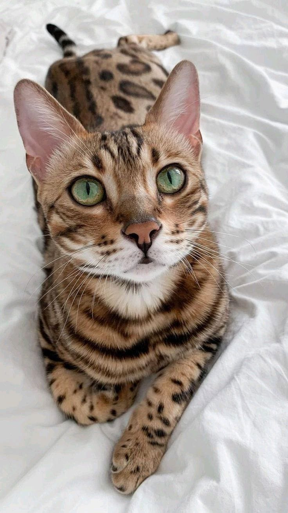
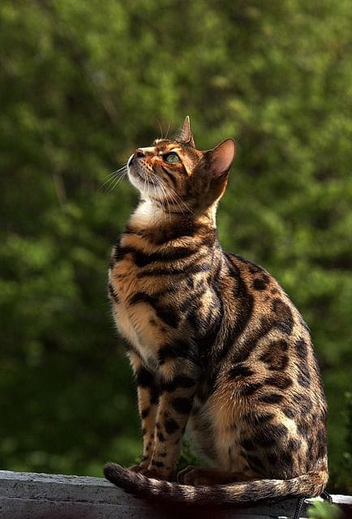
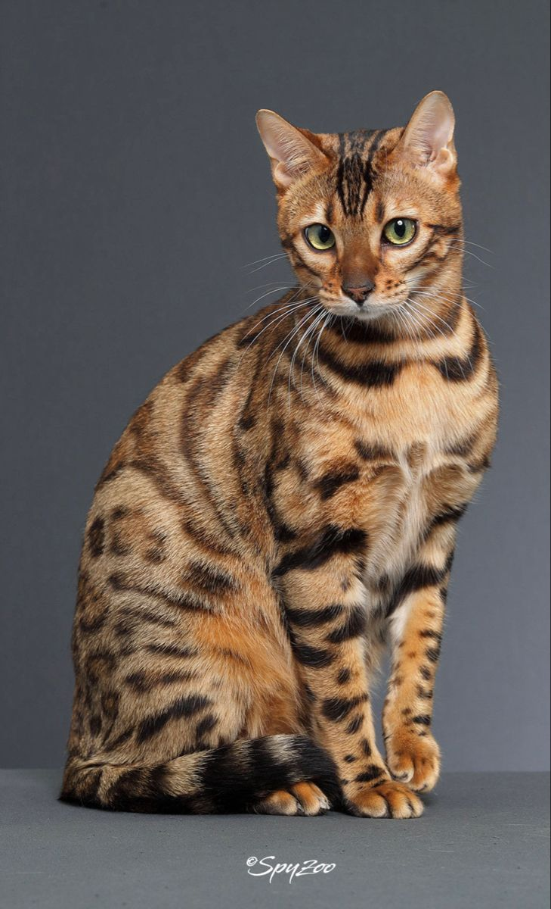
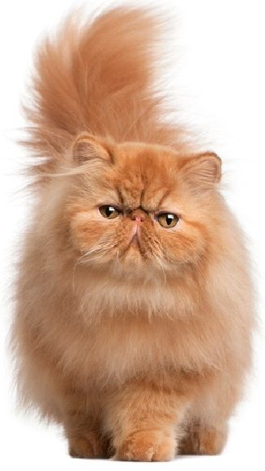
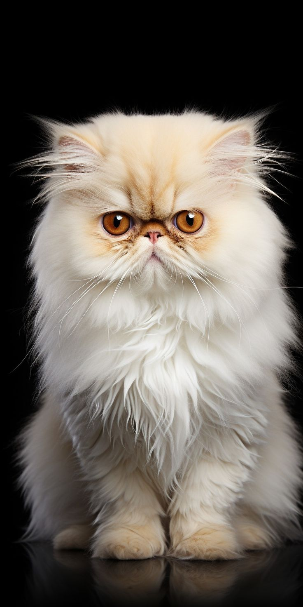
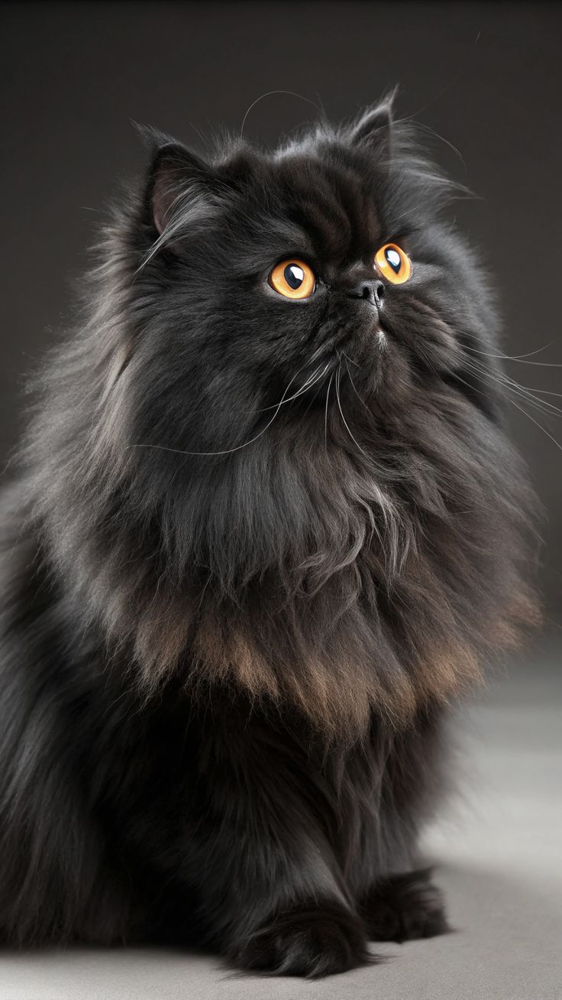

THis is a strikingg cat breed known for its wild,
leopard-like appearance and playful personality. Bengal cats have a distinctive coat pattern that resembles that of a leopard, with spots and rosettes on a sleek, muscular body. They are known for their high energy levels, intelligence, and affectionate nature, making them popular pets for those who enjoy an active and engaging companion. Bengal cats are also known for their love of water and can often be found playing in sinks or bathtubs.



Persian
Persian cats are a breed of domestic cat known for their long, luxurious fur and distinctive flat faces. They are one of the oldest cat breeds and are often associated with elegance and beauty. Persian cats have a calm and gentle temperament, making them popular pets for families and individuals alike. They require regular grooming to maintain their coat and prevent matting, but their affectionate nature and striking appearance make them a beloved choice for cat lovers around the world.



Siamese
Siamese cats are a breed of domestic cat known for their striking blue eyes and color-point coat pattern. They are highly social and vocal, often forming strong bonds with their human companions. Siamese cats are intelligent and curious, enjoying interactive play and mental stimulation. Their sleek, muscular build and distinctive markings make them easily recognizable, while their affectionate nature and playful personality make them wonderful pets for those who appreciate an engaging and communicative companion.